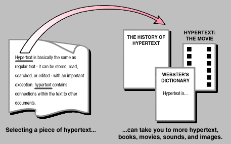

Hypertext refers to text displayed on a computer or device that links to other texts or resources through hyperlinks. It allows users to navigate between different pieces of information or documents by clicking on highlighted words, phrases, or images. Hypertext is a fundamental component of the World Wide Web and helps create an interconnected system of information.
